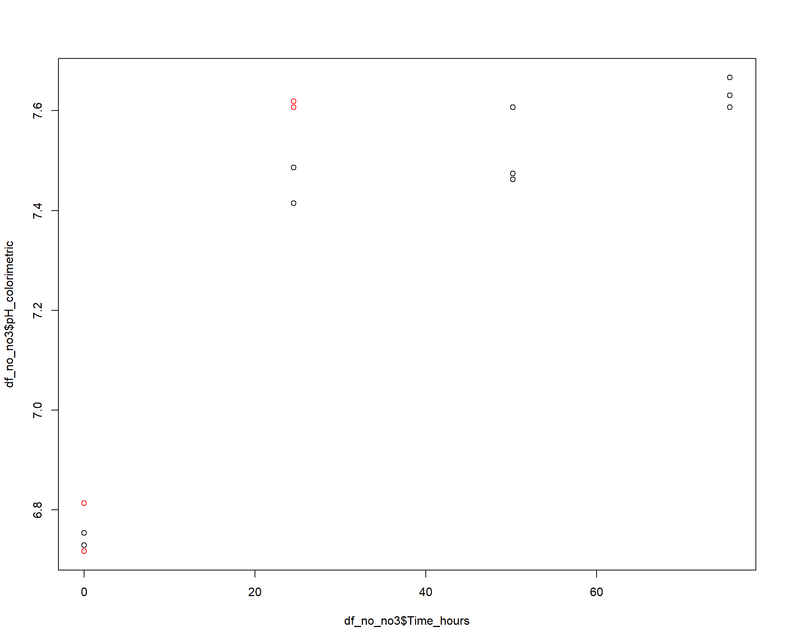
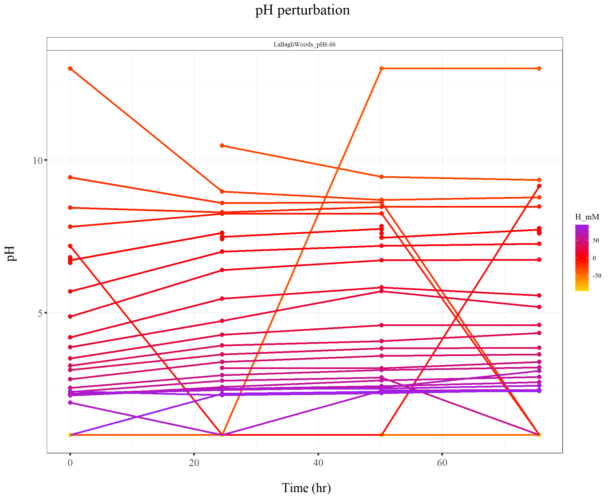

220131_pH_during_perturbation3
KiseokUchicago
2022-02-01
Last updated: 2022-02-08
Checks: 7 0
Knit directory: Denit_visualization_R/
This reproducible R Markdown analysis was created with workflowr (version 1.6.2). The Checks tab describes the reproducibility checks that were applied when the results were created. The Past versions tab lists the development history.
Great! Since the R Markdown file has been committed to the Git repository, you know the exact version of the code that produced these results.
Great job! The global environment was empty. Objects defined in the global environment can affect the analysis in your R Markdown file in unknown ways. For reproduciblity it’s best to always run the code in an empty environment.
The command set.seed(20210924) was run prior to running the code in the R Markdown file. Setting a seed ensures that any results that rely on randomness, e.g. subsampling or permutations, are reproducible.
Great job! Recording the operating system, R version, and package versions is critical for reproducibility.
Nice! There were no cached chunks for this analysis, so you can be confident that you successfully produced the results during this run.
Great job! Using relative paths to the files within your workflowr project makes it easier to run your code on other machines.
Great! You are using Git for version control. Tracking code development and connecting the code version to the results is critical for reproducibility.
The results in this page were generated with repository version 5a485d3. See the Past versions tab to see a history of the changes made to the R Markdown and HTML files.
Note that you need to be careful to ensure that all relevant files for the analysis have been committed to Git prior to generating the results (you can use wflow_publish or wflow_git_commit). workflowr only checks the R Markdown file, but you know if there are other scripts or data files that it depends on. Below is the status of the Git repository when the results were generated:
Ignored files:
Ignored: .Rhistory
Ignored: .Rproj.user/
Untracked files:
Untracked: data/120321_soil_buffering_capacity_Nichols-B.xlsx
Untracked: data/210911_TOC_sample_plate1.xlsx
Untracked: data/210922_Griess_sample_plate1-investigating.xlsx
Untracked: data/210922_Griess_sample_plate1.xlsx
Untracked: data/210927_TOC_sample_plate1_100ul.xlsx
Untracked: data/210927_TOC_sample_plate1_10ul.xlsx
Untracked: data/210928_Griess_sample_plate1.xlsx
Untracked: data/211005_Griess_sample_plate1.xlsx
Untracked: data/211007_Griess_blank_plate1.xlsx
Untracked: data/211007_Griess_blank_plate2.xlsx
Untracked: data/211008_Griess_blank_plate0.xlsx
Untracked: data/211008_Griess_blank_plate1.xlsx
Untracked: data/211017_Griess_plate0.xlsx
Untracked: data/211017_Griess_plate1.xlsx
Untracked: data/211017_Griess_plate2.xlsx
Untracked: data/211017_Griess_plate3.xlsx
Untracked: data/211017_Griess_plate4.xlsx
Untracked: data/211017_Griess_plate5.xlsx
Untracked: data/211017_Griess_plate6.xlsx
Untracked: data/211017_Griess_plate7.xlsx
Untracked: data/211017_Griess_plate8.xlsx
Untracked: data/211019_Griess_plate1.xlsx
Untracked: data/211020_Griess_plate0.xlsx
Untracked: data/211020_Griess_plate1.xlsx
Untracked: data/211020_df_full_innate.xlsx
Untracked: data/211025_Griess_no3_fit_plate0.xlsx
Untracked: data/211025_Griess_no3_fit_plate1.xlsx
Untracked: data/211025_Griess_plate0.xlsx
Untracked: data/211025_Griess_plate1.xlsx
Untracked: data/211028_Griess_plate1.xlsx
Untracked: data/211028_Griess_plate1_no3_fit.xlsx
Untracked: data/211028_Griess_plate2.xlsx
Untracked: data/211028_Griess_plate2_no3_fit.xlsx
Untracked: data/211028_Griess_plate3.xlsx
Untracked: data/211028_Griess_plate3_no3_fit.xlsx
Untracked: data/211028_Griess_plate4.xlsx
Untracked: data/211028_Griess_plate4_no3_fit.xlsx
Untracked: data/211028_time_table.xlsx
Untracked: data/211127_Griess_SUP1.xlsx
Untracked: data/211127_Griess_SUP11.xlsx
Untracked: data/211127_Griess_SUP3.xlsx
Untracked: data/211127_Griess_SUP5.xlsx
Untracked: data/211127_Griess_SUP7.xlsx
Untracked: data/211127_Griess_SUP9.xlsx
Untracked: data/211127_Griess_plate0.xlsx
Untracked: data/211127_time_table.xlsx
Untracked: data/211128_Griess_plate1.xlsx
Untracked: data/211128_Griess_plate10.xlsx
Untracked: data/211128_Griess_plate11.xlsx
Untracked: data/211128_Griess_plate2.xlsx
Untracked: data/211128_Griess_plate3.xlsx
Untracked: data/211128_Griess_plate4.xlsx
Untracked: data/211128_Griess_plate5.xlsx
Untracked: data/211128_Griess_plate6.xlsx
Untracked: data/211128_Griess_plate7.xlsx
Untracked: data/211128_Griess_plate8.xlsx
Untracked: data/211128_Griess_plate9.xlsx
Untracked: data/211128_time_table.xlsx
Untracked: data/211201_pH_colorimetric.xlsx
Untracked: data/211203_slurry_vs_water_drying_table.xlsx
Untracked: data/211203_slurry_vs_water_drying_time.xlsx
Untracked: data/211208_pH_colorimetric_T3.xlsx
Untracked: data/211208_pH_colorimetric_T4.xlsx
Untracked: data/211208_pH_colorimetric_T5.xlsx
Untracked: data/211208_pH_colorimetric_plate1.xlsx
Untracked: data/211208_pH_colorimetric_plate2.xlsx
Untracked: data/211208_pH_colorimetric_plate3.xlsx
Untracked: data/211208_time_table.xlsx
Untracked: data/211209_OD600_T1.xlsx
Untracked: data/211209_OD600_T2.xlsx
Untracked: data/211209_OD600_T3.xlsx
Untracked: data/211209_time_table.xlsx
Untracked: data/211210_pH_colorimetric_T0.xlsx
Untracked: data/211210_pH_colorimetric_T1.xlsx
Untracked: data/211210_pH_colorimetric_T2.xlsx
Untracked: data/211210_pH_colorimetric_T3.xlsx
Untracked: data/211210_time_table.xlsx
Untracked: data/211218_pH_colorimetric_t0.xlsx
Untracked: data/211218_pH_colorimetric_t1.xlsx
Untracked: data/211218_pH_colorimetric_t2.xlsx
Untracked: data/211218_pH_colorimetric_t3.xlsx
Untracked: data/211218_pH_colorimetric_t4.xlsx
Untracked: data/211218_time_table.xlsx
Untracked: data/211220_Griess_plate1.xlsx
Untracked: data/211220_Griess_plate10.xlsx
Untracked: data/211220_Griess_plate11.xlsx
Untracked: data/211220_Griess_plate2.xlsx
Untracked: data/211220_Griess_plate3.xlsx
Untracked: data/211220_Griess_plate4.xlsx
Untracked: data/211220_Griess_plate5.xlsx
Untracked: data/211220_Griess_plate6.xlsx
Untracked: data/211220_Griess_plate7.xlsx
Untracked: data/211220_Griess_plate8.xlsx
Untracked: data/211220_Griess_plate9.xlsx
Untracked: data/211220_time_table_AU.xlsx
Untracked: data/211220_time_table_BN.xlsx
Untracked: data/211224_TOC_sample_plate1.xlsx
Untracked: data/220103_Griess_T0.xlsx
Untracked: data/220103_Griess_T1.xlsx
Untracked: data/220103_Griess_T11.xlsx
Untracked: data/220103_Griess_T12.xlsx
Untracked: data/220103_Griess_T2.xlsx
Untracked: data/220103_Griess_T3.xlsx
Untracked: data/220103_Griess_T4.xlsx
Untracked: data/220103_Griess_T5.xlsx
Untracked: data/220103_Griess_T6.xlsx
Untracked: data/220103_Griess_T7.xlsx
Untracked: data/220103_Griess_T8.xlsx
Untracked: data/220103_Griess_T9.xlsx
Untracked: data/220103_time_table.xlsx
Untracked: data/220106_Ammonia_sample_plate1.xlsx
Untracked: data/220107-2_Ammonia_sample_plate1.xlsx
Untracked: data/220107-3_Ammonia_sample_plate1.xlsx
Untracked: data/220107-4_Ammonia_sample_plate1.xlsx
Untracked: data/220107-5_Ammonia_sample_plate1.xlsx
Untracked: data/220107-6_Ammonia_sample_plate1.xlsx
Untracked: data/220107-7_Ammonia_sample_plate1.xlsx
Untracked: data/220107-8_Ammonia_sample_plate1.xlsx
Untracked: data/220107-9_Ammonia_sample_plate1.xlsx
Untracked: data/220107_Ammonia_sample_plate1.xlsx
Untracked: data/220108_Ammonia_sample_plate1.xlsx
Untracked: data/220110_Ammonia_sample_plate1.xlsx
Untracked: data/220110_Ammonia_sample_plate2.xlsx
Untracked: data/220111_Ammonia_sample_T0.xlsx
Untracked: data/220111_Ammonia_sample_T1.xlsx
Untracked: data/220111_Ammonia_sample_T2.xlsx
Untracked: data/220111_Ammonia_sample_T3.xlsx
Untracked: data/220111_TOC_sample_plate1.xlsx
Untracked: data/220112_Ammonia_sample_T11.xlsx
Untracked: data/220112_Ammonia_sample_T12.xlsx
Untracked: data/220112_Ammonia_sample_T4.xlsx
Untracked: data/220112_Ammonia_sample_T5.xlsx
Untracked: data/220112_Ammonia_sample_T6.xlsx
Untracked: data/220112_Ammonia_sample_T7.xlsx
Untracked: data/220112_Ammonia_sample_T8.xlsx
Untracked: data/220112_Ammonia_sample_T9.xlsx
Untracked: data/220113_pH_colorimetric_T0.xlsx
Untracked: data/220113_pH_colorimetric_T12.xlsx
Untracked: data/220113_pH_colorimetric_T2.xlsx
Untracked: data/220113_pH_colorimetric_T3.xlsx
Untracked: data/220113_pH_colorimetric_T8.xlsx
Untracked: data/220125_pH_colorimetric_pH1_mu_opt0.099.xlsx
Untracked: data/220125_pH_colorimetric_pH1_using6.66.xlsx
Untracked: data/220125_pH_colorimetric_pH2_mu_opt0.099.xlsx
Untracked: data/220125_pH_colorimetric_pH2_using6.66.xlsx
Untracked: data/220125_time_table.xlsx
Untracked: data/220128_Ammonia_sample_plate1.xlsx
Untracked: data/220128_Ammonia_sample_plate2.xlsx
Untracked: data/220128_Ammonia_sample_plate3.xlsx
Untracked: data/220128_Ammonia_sample_plate4.xlsx
Untracked: data/220128_Ammonia_sample_plate5.xlsx
Untracked: data/220128_Ammonia_sample_plate6.xlsx
Untracked: data/220128_Griess_plate1.xlsx
Untracked: data/220128_Griess_plate2.xlsx
Untracked: data/220128_Griess_plate3.xlsx
Untracked: data/220128_Griess_plate4.xlsx
Untracked: data/220128_Griess_plate5.xlsx
Untracked: data/220128_Griess_plate6.xlsx
Untracked: data/220128_time_table.xlsx
Untracked: data/220131_Ammonia_sample_plate1.xlsx
Untracked: data/220131_Ammonia_sample_plate2.xlsx
Untracked: data/220131_Ammonia_sample_plate3.xlsx
Untracked: data/220131_Ammonia_sample_plate4.xlsx
Untracked: data/220131_Ammonia_sample_plate5.xlsx
Untracked: data/220131_Ammonia_sample_plate6.xlsx
Untracked: data/220131_Griess_plate1.xlsx
Untracked: data/220131_Griess_plate2.xlsx
Untracked: data/220131_Griess_plate3.xlsx
Untracked: data/220131_Griess_plate4.xlsx
Untracked: data/220131_Griess_plate5.xlsx
Untracked: data/220131_Griess_plate6.xlsx
Untracked: data/220131_pH_colorimetric_pH1_mu_opt_T0.xlsx
Untracked: data/220131_pH_colorimetric_pH2_mu_opt_T0.xlsx
Untracked: data/220131_time_table.xlsx
Untracked: data/TOC_TN_measurement_2_labs_211014.xlsx
Untracked: data/dry_weight_curve(9.5.21).xlsx
Untracked: data/pH_data(11.17.21)-Midway_etc.xlsx
Untracked: data/pH_data(12.6.21)-Midway_incubation_endpoint.xlsx
Untracked: data/pH_data(9.14.21).xlsx
Untracked: data/pH_data(9.28.21).xlsx
Untracked: past_figures/
Note that any generated files, e.g. HTML, png, CSS, etc., are not included in this status report because it is ok for generated content to have uncommitted changes.
These are the previous versions of the repository in which changes were made to the R Markdown (analysis/220131_pH_during_perturbation3.Rmd) and HTML (docs/220131_pH_during_perturbation3.html) files. If you’ve configured a remote Git repository (see ?wflow_git_remote), click on the hyperlinks in the table below to view the files as they were in that past version.
| File | Version | Author | Date | Message |
|---|---|---|---|---|
| Rmd | 5a485d3 | KiseokUchicago | 2022-02-08 | wflow_publish(“analysis/220131_pH_during_perturbation3.Rmd”) |
Time series analysis - pH perturbation (pH perturbation)
Researcher: Kiseok Lee
Experiment Date: 1/27/22 - 1/31/22 (5 days)
Analysis Date: 2/1/21 Lab: Seppe Kuehn
1. 20ul of 0.5M HCl or 0.05M NaOH was incrementally added
df_pH1 <- openxlsx::read.xlsx("data/220131_pH_colorimetric_pH1_mu_opt_T0.xlsx") # this is using pH 6.66 to get mu_opt for every time point (pH of the 0 acid/base added sample may not stay at pH 6.66)
df_pH2 <- openxlsx::read.xlsx("data/220131_pH_colorimetric_pH2_mu_opt_T0.xlsx") # this is using pH 6.66 to get mu_opt for every time point (pH of the 0 acid/base added sample may not stay at pH 6.66)
dim(df_pH1)[1] 96 11dim(df_pH2)[1] 96 11# filter wells with too much soil
df_pH1 %<>%
filter(!(Well %in% c("A05"))) # Filter defect A05
df_pH2 %<>%
filter(!(Well %in% c("F11"))) # Less than 90ul of sample
df_time <- openxlsx::read.xlsx("data/220131_time_table.xlsx")
df_time$Time_hours <- round(df_time$Time_hours,
1)
df_time$Time_days <- round(df_time$Time_days,
2)
df_pH_T <- rbind(df_pH1, df_pH2)
df_pH_T %<>%
left_join(df_time, by = c(Time_point = "Time_point"))
dim(df_pH_T)[1] 190 15# Change the soil names to include pH
# df_pH_T$Soil <-
# str_replace(df_pH_T$Soil,'NicholsC','NicholsC_pH7')
# df_pH_T$Soil <-
# str_replace(df_pH_T$Soil,'Allandale','Allandale_pH4')
# df_pH_T$Soil <- factor(df_pH_T$Soil,
# levels = c('NicholsC_pH7',
# 'Allandale_pH4'))
# mols and molarity unit conversion
# test
df_pH <- df_pH_T %>%
filter(Titration_type %in% c("NaOH",
"HCl"))
dim(df_pH) # 160[1] 154 15Added_Volume <- 1.7 # ml
Soil_mg <- 0.85
moisture_percent_1 = 23.6 # LaBaghWoods1
Added_Volume + Soil_mg * (moisture_percent_1/100)[1] 1.9006# moisture_percent_2 = 33.2 # Allandale
df_pH$Added_ul <- ifelse(df_pH$Titration_type ==
"NaOH", -1 * df_pH$Added_ul, df_pH$Added_ul) # HCl is +, NaOH is -
df_pH %<>%
mutate(H_mol = Concentration_M * Added_ul *
10^(-6)) # Calculate H mol
df_pH$Volume <- ifelse(df_pH$Soil == "LaBaghWoods_pH6.66",
Added_Volume + Soil_mg * (moisture_percent_1/100),
0) # Calc total volume
# df_pH$Volume <- ifelse(df_pH$Soil ==
# 'Allandale_pH4', Added_Volume +
# Soil_mg*(moisture_percent_2/100),
# df_pH$Volume) # Calc total volume
# df_pH$Volume %>% unique()
df_pH %<>%
mutate(H_Molarity = H_mol/(Volume * 10^(-3)))
df_pH %<>%
mutate(H_mM = H_Molarity * 1000)
# openxlsx::write.xlsx(df_pH,
# 'df_pH.xlsx')
# how many levels of H_mM?
pH_pert <- df_pH %>%
select(H_mM) %>%
unique() %>%
arrange()
df_pH %>%
filter(Soil == "LaBaghWoods_pH6.66") %>%
select(H_mM) %>%
unique() %>%
arrange(H_mM) H_mM
1 -94.706935
2 -89.445438
3 -84.183942
4 -78.922446
5 -73.660949
6 -68.399453
7 -63.137956
8 -57.876460
9 -52.614964
10 -47.353467
11 -42.091971
12 -36.830475
13 -31.568978
14 -26.307482
15 -21.045985
16 -15.784489
17 -10.522993
18 -5.261496
19 0.000000
20 5.261496
21 10.522993
22 15.784489
23 21.045985
24 26.307482
25 31.568978
26 36.830475
27 42.091971
28 47.353467
29 52.614964
30 57.876460
31 63.137956
32 68.399453
33 73.660949
34 78.922446
35 84.183942
36 89.445438
37 94.706935# df_pH %>% filter(Soil ==
# 'Allandale_pH4')%>% select(H_mM) %>%
# unique() %>% arrange()
colnames(df_pH) [1] "Well" "Nitrite_input" "Nitrate_input" "Soil"
[5] "Sample_type" "Titration_type" "Unit" "Concentration_M"
[9] "Added_ul" "Time_point" "pH_colorimetric" "Date"
[13] "Time_minutes" "Time_hours" "Time_days" "H_mol"
[17] "Volume" "H_Molarity" "H_mM" # average the pH 220131 only used 1
# replicate. So, no need to average.
# df_pH_ave <- df_pH %>%
# group_by(Nitrite_input,
# Nitrate_input, Soil, Titration_type,
# Concentration_M, Added_ul,
# Sample_type, H_mol, H_Molarity, H_mM,
# Time_point, Time_minutes, Time_hours,
# Time_days) %>% summarise(Ave_pH =
# mean(pH_colorimetric), Std_pH =
# sd(pH_colorimetric)) %>% ungroup()
# colnames(df_pH_ave)2. Plot titration curves
Plot one time point at the time
df_time
# df_T0 <- df_pH_ave %>%
# filter(Time_point == 'T0')
# Plot it in one plot - time series
df_plot <- df_pH
df_plot$Time_days <- factor(df_plot$Time_days)
ggplot(df_plot, aes(x = H_mM, y = pH_colorimetric,
color = Time_days, group = Time_days)) +
geom_point(size = 3, shape = 16, alpha = 1) +
# geom_errorbar(aes(ymin=Ave_pH -
# Std_pH, ymax=Ave_pH + Std_pH),
# width=.05)+
geom_line(size = 1) + # scale_color_brewer(palette='Set1') + geom_line(size
geom_line(size = 1) + # scale_color_brewer(palette='Set1') + =
geom_line(size = 1) + # scale_color_brewer(palette='Set1') + 1)
geom_line(size = 1) + # scale_color_brewer(palette='Set1') + +
geom_line(size = 1) + # scale_color_brewer(palette='Set1') + #
geom_line(size = 1) + # scale_color_brewer(palette='Set1') + scale_color_brewer(palette='Set1')
geom_line(size = 1) + # scale_color_brewer(palette='Set1') + +
ylab("pH \n") + xlab("\n added [H+] mM") +
scale_x_continuous(breaks = seq(-100,
100, 5)) + scale_y_continuous(breaks = seq(0,
14, 1), limits = c(0, 14)) + ggtitle("Soil pH perturbation & titration curves (LaBaghWoods1: pH 6.66) \n") +
# label geom_text(aes(label =
# pH_colorimetric), size = 3, vjust
# = -1.5, family='serif',
# show.legend = FALSE)+
mytheme_2d
# Remove pH 1 reads
colnames(df_plot)
df_plot_no1 <- df_plot %>%
filter(!(pH_colorimetric == 1))
ggplot(df_plot_no1, aes(x = H_mM, y = pH_colorimetric,
color = Time_days, group = Time_days)) +
geom_point(size = 3, shape = 16, alpha = 1) +
# geom_errorbar(aes(ymin=Ave_pH -
# Std_pH, ymax=Ave_pH + Std_pH),
# width=.05)+
geom_line(size = 1) + geom_vline(xintercept = 0,
linetype = "dashed", color = "black") +
# scale_color_brewer(palette='Set1')
# +
ylab("pH \n") + xlab("\n added [H+] mM") +
scale_x_continuous(breaks = seq(-100,
100, 5), limits = c(-100, 100)) +
scale_y_continuous(breaks = seq(0, 14,
1), limits = c(0, 14)) + ggtitle("Soil pH perturbation & titration curves (LaBaghWoods1: pH 6.66) \n") +
# label geom_text(aes(label =
# pH_colorimetric), size = 3, vjust
# = -1.5, family='serif',
# show.legend = FALSE)+
mytheme_2d
# df_T0 <- df_pH_ave %>%
# filter(Time_point == 'T0')
df_T0 <- df_pH %>%
filter(Time_point == "T0")
ggplot(df_T0, aes(x = H_mM, y = pH_colorimetric,
color = Soil, group = Soil)) + geom_point(size = 3,
shape = 16, alpha = 1) + # geom_errorbar(aes(ymin=Ave_pH - Std_pH, ymax=Ave_pH + Std_pH), width=.05)+ shape
shape = 16, alpha = 1) + # geom_errorbar(aes(ymin=Ave_pH - Std_pH, ymax=Ave_pH + Std_pH), width=.05)+ =
shape = 16, alpha = 1) + # geom_errorbar(aes(ymin=Ave_pH - Std_pH, ymax=Ave_pH + Std_pH), width=.05)+ 16,
shape = 16, alpha = 1) + # geom_errorbar(aes(ymin=Ave_pH - Std_pH, ymax=Ave_pH + Std_pH), width=.05)+ alpha
shape = 16, alpha = 1) + # geom_errorbar(aes(ymin=Ave_pH - Std_pH, ymax=Ave_pH + Std_pH), width=.05)+ =
shape = 16, alpha = 1) + # geom_errorbar(aes(ymin=Ave_pH - Std_pH, ymax=Ave_pH + Std_pH), width=.05)+ 1)
shape = 16, alpha = 1) + # geom_errorbar(aes(ymin=Ave_pH - Std_pH, ymax=Ave_pH + Std_pH), width=.05)+ +
shape = 16, alpha = 1) + # geom_errorbar(aes(ymin=Ave_pH - Std_pH, ymax=Ave_pH + Std_pH), width=.05)+ #
shape = 16, alpha = 1) + # geom_errorbar(aes(ymin=Ave_pH - Std_pH, ymax=Ave_pH + Std_pH), width=.05)+ geom_errorbar(aes(ymin=Ave_pH
shape = 16, alpha = 1) + # geom_errorbar(aes(ymin=Ave_pH - Std_pH, ymax=Ave_pH + Std_pH), width=.05)+ -
shape = 16, alpha = 1) + # geom_errorbar(aes(ymin=Ave_pH - Std_pH, ymax=Ave_pH + Std_pH), width=.05)+ Std_pH,
shape = 16, alpha = 1) + # geom_errorbar(aes(ymin=Ave_pH - Std_pH, ymax=Ave_pH + Std_pH), width=.05)+ ymax=Ave_pH
shape = 16, alpha = 1) + # geom_errorbar(aes(ymin=Ave_pH - Std_pH, ymax=Ave_pH + Std_pH), width=.05)+ +
shape = 16, alpha = 1) + # geom_errorbar(aes(ymin=Ave_pH - Std_pH, ymax=Ave_pH + Std_pH), width=.05)+ Std_pH),
shape = 16, alpha = 1) + # geom_errorbar(aes(ymin=Ave_pH - Std_pH, ymax=Ave_pH + Std_pH), width=.05)+ width=.05)+
geom_line(size = 1) + # scale_color_brewer(palette='Set1') + geom_line(size
geom_line(size = 1) + # scale_color_brewer(palette='Set1') + =
geom_line(size = 1) + # scale_color_brewer(palette='Set1') + 1)
geom_line(size = 1) + # scale_color_brewer(palette='Set1') + +
geom_line(size = 1) + # scale_color_brewer(palette='Set1') + #
geom_line(size = 1) + # scale_color_brewer(palette='Set1') + scale_color_brewer(palette='Set1')
geom_line(size = 1) + # scale_color_brewer(palette='Set1') + +
ylab("pH \n") + xlab("\n added [H+] mM") +
scale_y_continuous(breaks = seq(0, 12,
1), limits = c(0, 12)) + ggtitle("[T0] Soil pH perturbation (Anaerobic incubation) \n") +
# label geom_text(aes(label =
# pH_colorimetric), size = 3, vjust
# = -1.5, family='serif',
# show.legend = FALSE)+
mytheme_2d
# df_T2 <- df_pH_ave %>%
# filter(Time_point == 'T2')
df_T4 <- df_pH %>%
filter(Time_point == "T4")
ggplot(df_T4, aes(x = H_mM, y = pH_colorimetric,
color = Soil, group = Soil)) + geom_point(size = 3,
shape = 16, alpha = 1) + # geom_errorbar(aes(ymin=Ave_pH - Std_pH, ymax=Ave_pH + Std_pH), width=.05)+ shape
shape = 16, alpha = 1) + # geom_errorbar(aes(ymin=Ave_pH - Std_pH, ymax=Ave_pH + Std_pH), width=.05)+ =
shape = 16, alpha = 1) + # geom_errorbar(aes(ymin=Ave_pH - Std_pH, ymax=Ave_pH + Std_pH), width=.05)+ 16,
shape = 16, alpha = 1) + # geom_errorbar(aes(ymin=Ave_pH - Std_pH, ymax=Ave_pH + Std_pH), width=.05)+ alpha
shape = 16, alpha = 1) + # geom_errorbar(aes(ymin=Ave_pH - Std_pH, ymax=Ave_pH + Std_pH), width=.05)+ =
shape = 16, alpha = 1) + # geom_errorbar(aes(ymin=Ave_pH - Std_pH, ymax=Ave_pH + Std_pH), width=.05)+ 1)
shape = 16, alpha = 1) + # geom_errorbar(aes(ymin=Ave_pH - Std_pH, ymax=Ave_pH + Std_pH), width=.05)+ +
shape = 16, alpha = 1) + # geom_errorbar(aes(ymin=Ave_pH - Std_pH, ymax=Ave_pH + Std_pH), width=.05)+ #
shape = 16, alpha = 1) + # geom_errorbar(aes(ymin=Ave_pH - Std_pH, ymax=Ave_pH + Std_pH), width=.05)+ geom_errorbar(aes(ymin=Ave_pH
shape = 16, alpha = 1) + # geom_errorbar(aes(ymin=Ave_pH - Std_pH, ymax=Ave_pH + Std_pH), width=.05)+ -
shape = 16, alpha = 1) + # geom_errorbar(aes(ymin=Ave_pH - Std_pH, ymax=Ave_pH + Std_pH), width=.05)+ Std_pH,
shape = 16, alpha = 1) + # geom_errorbar(aes(ymin=Ave_pH - Std_pH, ymax=Ave_pH + Std_pH), width=.05)+ ymax=Ave_pH
shape = 16, alpha = 1) + # geom_errorbar(aes(ymin=Ave_pH - Std_pH, ymax=Ave_pH + Std_pH), width=.05)+ +
shape = 16, alpha = 1) + # geom_errorbar(aes(ymin=Ave_pH - Std_pH, ymax=Ave_pH + Std_pH), width=.05)+ Std_pH),
shape = 16, alpha = 1) + # geom_errorbar(aes(ymin=Ave_pH - Std_pH, ymax=Ave_pH + Std_pH), width=.05)+ width=.05)+
geom_line(size = 1) + # scale_color_brewer(palette='Set1') + geom_line(size
geom_line(size = 1) + # scale_color_brewer(palette='Set1') + =
geom_line(size = 1) + # scale_color_brewer(palette='Set1') + 1)
geom_line(size = 1) + # scale_color_brewer(palette='Set1') + +
geom_line(size = 1) + # scale_color_brewer(palette='Set1') + #
geom_line(size = 1) + # scale_color_brewer(palette='Set1') + scale_color_brewer(palette='Set1')
geom_line(size = 1) + # scale_color_brewer(palette='Set1') + +
ylab("pH \n") + xlab("\n added [H+] mM") +
scale_y_continuous(breaks = seq(0, 12,
1), limits = c(0, 12)) + ggtitle("[T4] Soil pH perturbation (Anaerobic incubation) \n") +
# label geom_text(aes(label =
# pH_colorimetric), size = 3, vjust
# = -1.5, family='serif',
# show.legend = FALSE)+
mytheme_2d
# df_T7 <- df_pH_ave %>%
# filter(Time_point == 'T7')
df_T7 <- df_pH %>%
filter(Time_point == "T7")
df_T7 %>%
filter(H_mM == 0)
ggplot(df_T7, aes(x = H_mM, y = pH_colorimetric,
color = Soil, group = Soil)) + geom_point(size = 3,
shape = 16, alpha = 1) + # geom_errorbar(aes(ymin=Ave_pH - Std_pH, ymax=Ave_pH + Std_pH), width=.05)+ shape
shape = 16, alpha = 1) + # geom_errorbar(aes(ymin=Ave_pH - Std_pH, ymax=Ave_pH + Std_pH), width=.05)+ =
shape = 16, alpha = 1) + # geom_errorbar(aes(ymin=Ave_pH - Std_pH, ymax=Ave_pH + Std_pH), width=.05)+ 16,
shape = 16, alpha = 1) + # geom_errorbar(aes(ymin=Ave_pH - Std_pH, ymax=Ave_pH + Std_pH), width=.05)+ alpha
shape = 16, alpha = 1) + # geom_errorbar(aes(ymin=Ave_pH - Std_pH, ymax=Ave_pH + Std_pH), width=.05)+ =
shape = 16, alpha = 1) + # geom_errorbar(aes(ymin=Ave_pH - Std_pH, ymax=Ave_pH + Std_pH), width=.05)+ 1)
shape = 16, alpha = 1) + # geom_errorbar(aes(ymin=Ave_pH - Std_pH, ymax=Ave_pH + Std_pH), width=.05)+ +
shape = 16, alpha = 1) + # geom_errorbar(aes(ymin=Ave_pH - Std_pH, ymax=Ave_pH + Std_pH), width=.05)+ #
shape = 16, alpha = 1) + # geom_errorbar(aes(ymin=Ave_pH - Std_pH, ymax=Ave_pH + Std_pH), width=.05)+ geom_errorbar(aes(ymin=Ave_pH
shape = 16, alpha = 1) + # geom_errorbar(aes(ymin=Ave_pH - Std_pH, ymax=Ave_pH + Std_pH), width=.05)+ -
shape = 16, alpha = 1) + # geom_errorbar(aes(ymin=Ave_pH - Std_pH, ymax=Ave_pH + Std_pH), width=.05)+ Std_pH,
shape = 16, alpha = 1) + # geom_errorbar(aes(ymin=Ave_pH - Std_pH, ymax=Ave_pH + Std_pH), width=.05)+ ymax=Ave_pH
shape = 16, alpha = 1) + # geom_errorbar(aes(ymin=Ave_pH - Std_pH, ymax=Ave_pH + Std_pH), width=.05)+ +
shape = 16, alpha = 1) + # geom_errorbar(aes(ymin=Ave_pH - Std_pH, ymax=Ave_pH + Std_pH), width=.05)+ Std_pH),
shape = 16, alpha = 1) + # geom_errorbar(aes(ymin=Ave_pH - Std_pH, ymax=Ave_pH + Std_pH), width=.05)+ width=.05)+
geom_line(size = 1) + # scale_color_brewer(palette='Set1') + geom_line(size
geom_line(size = 1) + # scale_color_brewer(palette='Set1') + =
geom_line(size = 1) + # scale_color_brewer(palette='Set1') + 1)
geom_line(size = 1) + # scale_color_brewer(palette='Set1') + +
geom_line(size = 1) + # scale_color_brewer(palette='Set1') + #
geom_line(size = 1) + # scale_color_brewer(palette='Set1') + scale_color_brewer(palette='Set1')
geom_line(size = 1) + # scale_color_brewer(palette='Set1') + +
ylab("pH \n") + xlab("\n added [H+] mM") +
scale_y_continuous(breaks = seq(0, 12,
1), limits = c(0, 12)) + ggtitle("[T7] Soil pH perturbation (Anaerobic incubation) \n") +
# label geom_text(aes(label =
# pH_colorimetric), size = 3, vjust
# = -1.5, family='serif',
# show.legend = FALSE)+
mytheme_2d
# df_T9 <- df_pH_ave %>%
# filter(Time_point == 'T9')
df_T9 <- df_pH %>%
filter(Time_point == "T9")
ggplot(df_T9, aes(x = H_mM, y = pH_colorimetric,
color = Soil, group = Soil)) + geom_point(size = 3,
shape = 16, alpha = 1) + # geom_errorbar(aes(ymin=Ave_pH - Std_pH, ymax=Ave_pH + Std_pH), width=.05)+ shape
shape = 16, alpha = 1) + # geom_errorbar(aes(ymin=Ave_pH - Std_pH, ymax=Ave_pH + Std_pH), width=.05)+ =
shape = 16, alpha = 1) + # geom_errorbar(aes(ymin=Ave_pH - Std_pH, ymax=Ave_pH + Std_pH), width=.05)+ 16,
shape = 16, alpha = 1) + # geom_errorbar(aes(ymin=Ave_pH - Std_pH, ymax=Ave_pH + Std_pH), width=.05)+ alpha
shape = 16, alpha = 1) + # geom_errorbar(aes(ymin=Ave_pH - Std_pH, ymax=Ave_pH + Std_pH), width=.05)+ =
shape = 16, alpha = 1) + # geom_errorbar(aes(ymin=Ave_pH - Std_pH, ymax=Ave_pH + Std_pH), width=.05)+ 1)
shape = 16, alpha = 1) + # geom_errorbar(aes(ymin=Ave_pH - Std_pH, ymax=Ave_pH + Std_pH), width=.05)+ +
shape = 16, alpha = 1) + # geom_errorbar(aes(ymin=Ave_pH - Std_pH, ymax=Ave_pH + Std_pH), width=.05)+ #
shape = 16, alpha = 1) + # geom_errorbar(aes(ymin=Ave_pH - Std_pH, ymax=Ave_pH + Std_pH), width=.05)+ geom_errorbar(aes(ymin=Ave_pH
shape = 16, alpha = 1) + # geom_errorbar(aes(ymin=Ave_pH - Std_pH, ymax=Ave_pH + Std_pH), width=.05)+ -
shape = 16, alpha = 1) + # geom_errorbar(aes(ymin=Ave_pH - Std_pH, ymax=Ave_pH + Std_pH), width=.05)+ Std_pH,
shape = 16, alpha = 1) + # geom_errorbar(aes(ymin=Ave_pH - Std_pH, ymax=Ave_pH + Std_pH), width=.05)+ ymax=Ave_pH
shape = 16, alpha = 1) + # geom_errorbar(aes(ymin=Ave_pH - Std_pH, ymax=Ave_pH + Std_pH), width=.05)+ +
shape = 16, alpha = 1) + # geom_errorbar(aes(ymin=Ave_pH - Std_pH, ymax=Ave_pH + Std_pH), width=.05)+ Std_pH),
shape = 16, alpha = 1) + # geom_errorbar(aes(ymin=Ave_pH - Std_pH, ymax=Ave_pH + Std_pH), width=.05)+ width=.05)+
geom_line(size = 1) + # scale_color_brewer(palette='Set1') + geom_line(size
geom_line(size = 1) + # scale_color_brewer(palette='Set1') + =
geom_line(size = 1) + # scale_color_brewer(palette='Set1') + 1)
geom_line(size = 1) + # scale_color_brewer(palette='Set1') + +
geom_line(size = 1) + # scale_color_brewer(palette='Set1') + #
geom_line(size = 1) + # scale_color_brewer(palette='Set1') + scale_color_brewer(palette='Set1')
geom_line(size = 1) + # scale_color_brewer(palette='Set1') + +
ylab("pH \n") + xlab("\n added [H+] mM") +
scale_y_continuous(breaks = seq(0, 12,
1), limits = c(0, 12)) + ggtitle("[T9] Soil pH perturbation (Anaerobic incubation) \n") +
# label geom_text(aes(label =
# pH_colorimetric), size = 3, vjust
# = -1.5, family='serif',
# show.legend = FALSE)+
mytheme_2d
Error: <text>:66:15: unexpected ','
65: shape = 16, alpha = 1) + # geom_errorbar(aes(ymin=Ave_pH - Std_pH, ymax=Ave_pH + Std_pH), width=.05)+ shape
66: shape = 16,
^3. Time dynamics of pH
# Get No_Nitrate sample
df_pH <- df_pH_T %>%
filter(Titration_type %in% c("NaOH",
"HCl", "No_Nitrate"))
dim(df_pH) # 160[1] 166 15Added_Volume <- 1.7 # ml
Soil_mg <- 0.85
moisture_percent_1 = 23.6 # LaBaghWoods1
Added_Volume + Soil_mg * (moisture_percent_1/100)[1] 1.9006# moisture_percent_2 = 33.2 # Allandale
df_pH$Added_ul <- ifelse(df_pH$Titration_type ==
"NaOH", -1 * df_pH$Added_ul, df_pH$Added_ul) # HCl is +, NaOH is -
df_pH %<>%
mutate(H_mol = Concentration_M * Added_ul *
10^(-6)) # Calculate H mol
df_pH$Volume <- ifelse(df_pH$Soil == "LaBaghWoods_pH6.66",
Added_Volume + Soil_mg * (moisture_percent_1/100),
0) # Calc total volume
# df_pH$Volume <- ifelse(df_pH$Soil ==
# 'Allandale_pH4', Added_Volume +
# Soil_mg*(moisture_percent_2/100),
# df_pH$Volume) # Calc total volume
# df_pH$Volume %>% unique()
df_pH %<>%
mutate(H_Molarity = H_mol/(Volume * 10^(-3)))
df_pH %<>%
mutate(H_mM = H_Molarity * 1000)
# openxlsx::write.xlsx(df_pH,
# 'df_pH.xlsx')
# how many levels of H_mM?
pH_pert <- df_pH %>%
select(H_mM) %>%
unique() %>%
arrange()
df_pH %>%
filter(Soil == "LaBaghWoods_pH6.66") %>%
select(H_mM) %>%
unique() %>%
arrange(H_mM) H_mM
1 -94.706935
2 -89.445438
3 -84.183942
4 -78.922446
5 -73.660949
6 -68.399453
7 -63.137956
8 -57.876460
9 -52.614964
10 -47.353467
11 -42.091971
12 -36.830475
13 -31.568978
14 -26.307482
15 -21.045985
16 -15.784489
17 -10.522993
18 -5.261496
19 0.000000
20 5.261496
21 10.522993
22 15.784489
23 21.045985
24 26.307482
25 31.568978
26 36.830475
27 42.091971
28 47.353467
29 52.614964
30 57.876460
31 63.137956
32 68.399453
33 73.660949
34 78.922446
35 84.183942
36 89.445438
37 94.706935# df_pH %>% filter(Soil ==
# 'Allandale_pH4')%>% select(H_mM) %>%
# unique() %>% arrange()
colnames(df_pH) [1] "Well" "Nitrite_input" "Nitrate_input" "Soil"
[5] "Sample_type" "Titration_type" "Unit" "Concentration_M"
[9] "Added_ul" "Time_point" "pH_colorimetric" "Date"
[13] "Time_minutes" "Time_hours" "Time_days" "H_mol"
[17] "Volume" "H_Molarity" "H_mM" df_pH %>%
filter() Well Nitrite_input Nitrate_input Soil Sample_type
1 A01 0 2 LaBaghWoods_pH6.66 Slurry
2 A02 0 2 LaBaghWoods_pH6.66 Slurry
3 A03 0 2 LaBaghWoods_pH6.66 Slurry
4 A04 0 2 LaBaghWoods_pH6.66 Slurry
5 A06 0 2 LaBaghWoods_pH6.66 Slurry
6 A07 0 2 LaBaghWoods_pH6.66 Slurry
7 A08 0 2 LaBaghWoods_pH6.66 Slurry
8 A09 0 2 LaBaghWoods_pH6.66 Slurry
9 A10 0 2 LaBaghWoods_pH6.66 Slurry
10 A11 0 2 LaBaghWoods_pH6.66 Slurry
11 A12 0 2 LaBaghWoods_pH6.66 Slurry
12 B01 0 2 LaBaghWoods_pH6.66 Slurry
13 B02 0 2 LaBaghWoods_pH6.66 Slurry
14 B03 0 2 LaBaghWoods_pH6.66 Slurry
15 B04 0 2 LaBaghWoods_pH6.66 Slurry
16 B05 0 2 LaBaghWoods_pH6.66 Slurry
17 B06 0 2 LaBaghWoods_pH6.66 Slurry
18 B07 0 2 LaBaghWoods_pH6.66 Slurry
19 B08 0 2 LaBaghWoods_pH6.66 Slurry
20 B09 0 2 LaBaghWoods_pH6.66 Slurry
21 B10 0 2 LaBaghWoods_pH6.66 Slurry
22 B11 0 2 LaBaghWoods_pH6.66 Slurry
23 B12 0 2 LaBaghWoods_pH6.66 Slurry
24 C01 0 2 LaBaghWoods_pH6.66 Slurry
25 C02 0 2 LaBaghWoods_pH6.66 Slurry
26 C03 0 2 LaBaghWoods_pH6.66 Slurry
27 C04 0 2 LaBaghWoods_pH6.66 Slurry
28 C05 0 2 LaBaghWoods_pH6.66 Slurry
29 C06 0 2 LaBaghWoods_pH6.66 Slurry
30 C07 0 2 LaBaghWoods_pH6.66 Slurry
31 C08 0 2 LaBaghWoods_pH6.66 Slurry
32 C09 0 2 LaBaghWoods_pH6.66 Slurry
33 C10 0 2 LaBaghWoods_pH6.66 Slurry
34 C11 0 2 LaBaghWoods_pH6.66 Slurry
35 C12 0 2 LaBaghWoods_pH6.66 Slurry
36 D01 0 2 LaBaghWoods_pH6.66 Slurry
37 D02 0 2 LaBaghWoods_pH6.66 Slurry
38 D03 0 2 LaBaghWoods_pH6.66 Slurry
39 D04 0 2 LaBaghWoods_pH6.66 Slurry
40 D05 0 2 LaBaghWoods_pH6.66 Slurry
41 D06 0 2 LaBaghWoods_pH6.66 Slurry
42 D07 0 2 LaBaghWoods_pH6.66 Slurry
43 D08 0 2 LaBaghWoods_pH6.66 Slurry
44 D09 0 2 LaBaghWoods_pH6.66 Slurry
45 D10 0 2 LaBaghWoods_pH6.66 Slurry
46 D11 0 2 LaBaghWoods_pH6.66 Slurry
47 D12 0 2 LaBaghWoods_pH6.66 Slurry
48 E01 0 2 LaBaghWoods_pH6.66 Slurry
49 E02 0 2 LaBaghWoods_pH6.66 Slurry
50 E03 0 2 LaBaghWoods_pH6.66 Slurry
51 E04 0 2 LaBaghWoods_pH6.66 Slurry
52 E05 0 2 LaBaghWoods_pH6.66 Slurry
53 E06 0 2 LaBaghWoods_pH6.66 Slurry
54 E07 0 2 LaBaghWoods_pH6.66 Slurry
55 E08 0 2 LaBaghWoods_pH6.66 Slurry
56 E09 0 2 LaBaghWoods_pH6.66 Slurry
57 E10 0 2 LaBaghWoods_pH6.66 Slurry
58 E11 0 2 LaBaghWoods_pH6.66 Slurry
59 E12 0 2 LaBaghWoods_pH6.66 Slurry
60 F01 0 2 LaBaghWoods_pH6.66 Slurry
61 F02 0 2 LaBaghWoods_pH6.66 Slurry
62 F03 0 2 LaBaghWoods_pH6.66 Slurry
63 F04 0 2 LaBaghWoods_pH6.66 Slurry
64 F05 0 2 LaBaghWoods_pH6.66 Slurry
65 F06 0 2 LaBaghWoods_pH6.66 Slurry
66 F07 0 2 LaBaghWoods_pH6.66 Slurry
67 F08 0 2 LaBaghWoods_pH6.66 Slurry
68 F09 0 2 LaBaghWoods_pH6.66 Slurry
69 F10 0 2 LaBaghWoods_pH6.66 Slurry
70 F11 0 2 LaBaghWoods_pH6.66 Slurry
71 F12 0 2 LaBaghWoods_pH6.66 Slurry
72 G01 0 2 LaBaghWoods_pH6.66 Slurry
73 G02 0 2 LaBaghWoods_pH6.66 Slurry
74 G03 0 0 LaBaghWoods_pH6.66 No_Nitrate
75 G07 0 2 LaBaghWoods_pH6.66 Slurry
76 G08 0 2 LaBaghWoods_pH6.66 Slurry
77 G09 0 0 LaBaghWoods_pH6.66 No_Nitrate
78 H01 0 2 LaBaghWoods_pH6.66 Slurry
79 H02 0 0 LaBaghWoods_pH6.66 No_Nitrate
80 H03 0 0 LaBaghWoods_pH6.66 No_Nitrate
81 H07 0 2 LaBaghWoods_pH6.66 Slurry
82 H08 0 0 LaBaghWoods_pH6.66 No_Nitrate
83 H09 0 0 LaBaghWoods_pH6.66 No_Nitrate
84 A01 0 2 LaBaghWoods_pH6.66 Slurry
85 A02 0 2 LaBaghWoods_pH6.66 Slurry
86 A03 0 2 LaBaghWoods_pH6.66 Slurry
87 A04 0 2 LaBaghWoods_pH6.66 Slurry
88 A05 0 2 LaBaghWoods_pH6.66 Slurry
89 A06 0 2 LaBaghWoods_pH6.66 Slurry
90 A07 0 2 LaBaghWoods_pH6.66 Slurry
91 A08 0 2 LaBaghWoods_pH6.66 Slurry
92 A09 0 2 LaBaghWoods_pH6.66 Slurry
93 A10 0 2 LaBaghWoods_pH6.66 Slurry
94 A11 0 2 LaBaghWoods_pH6.66 Slurry
95 A12 0 2 LaBaghWoods_pH6.66 Slurry
96 B01 0 2 LaBaghWoods_pH6.66 Slurry
97 B02 0 2 LaBaghWoods_pH6.66 Slurry
98 B03 0 2 LaBaghWoods_pH6.66 Slurry
99 B04 0 2 LaBaghWoods_pH6.66 Slurry
100 B05 0 2 LaBaghWoods_pH6.66 Slurry
101 B06 0 2 LaBaghWoods_pH6.66 Slurry
102 B07 0 2 LaBaghWoods_pH6.66 Slurry
103 B08 0 2 LaBaghWoods_pH6.66 Slurry
104 B09 0 2 LaBaghWoods_pH6.66 Slurry
105 B10 0 2 LaBaghWoods_pH6.66 Slurry
106 B11 0 2 LaBaghWoods_pH6.66 Slurry
107 B12 0 2 LaBaghWoods_pH6.66 Slurry
108 C01 0 2 LaBaghWoods_pH6.66 Slurry
109 C02 0 2 LaBaghWoods_pH6.66 Slurry
110 C03 0 2 LaBaghWoods_pH6.66 Slurry
111 C04 0 2 LaBaghWoods_pH6.66 Slurry
112 C05 0 2 LaBaghWoods_pH6.66 Slurry
113 C06 0 2 LaBaghWoods_pH6.66 Slurry
114 C07 0 2 LaBaghWoods_pH6.66 Slurry
115 C08 0 2 LaBaghWoods_pH6.66 Slurry
116 C09 0 2 LaBaghWoods_pH6.66 Slurry
117 C10 0 2 LaBaghWoods_pH6.66 Slurry
118 C11 0 2 LaBaghWoods_pH6.66 Slurry
119 C12 0 2 LaBaghWoods_pH6.66 Slurry
120 D01 0 2 LaBaghWoods_pH6.66 Slurry
121 D02 0 2 LaBaghWoods_pH6.66 Slurry
122 D03 0 2 LaBaghWoods_pH6.66 Slurry
123 D04 0 2 LaBaghWoods_pH6.66 Slurry
124 D05 0 2 LaBaghWoods_pH6.66 Slurry
125 D06 0 2 LaBaghWoods_pH6.66 Slurry
126 D07 0 2 LaBaghWoods_pH6.66 Slurry
127 D08 0 2 LaBaghWoods_pH6.66 Slurry
128 D09 0 2 LaBaghWoods_pH6.66 Slurry
129 D10 0 2 LaBaghWoods_pH6.66 Slurry
130 D11 0 2 LaBaghWoods_pH6.66 Slurry
131 D12 0 2 LaBaghWoods_pH6.66 Slurry
132 E01 0 2 LaBaghWoods_pH6.66 Slurry
133 E02 0 2 LaBaghWoods_pH6.66 Slurry
134 E03 0 2 LaBaghWoods_pH6.66 Slurry
135 E04 0 2 LaBaghWoods_pH6.66 Slurry
136 E05 0 2 LaBaghWoods_pH6.66 Slurry
137 E06 0 2 LaBaghWoods_pH6.66 Slurry
138 E07 0 2 LaBaghWoods_pH6.66 Slurry
139 E08 0 2 LaBaghWoods_pH6.66 Slurry
140 E09 0 2 LaBaghWoods_pH6.66 Slurry
141 E10 0 2 LaBaghWoods_pH6.66 Slurry
142 E11 0 2 LaBaghWoods_pH6.66 Slurry
143 E12 0 2 LaBaghWoods_pH6.66 Slurry
144 F01 0 2 LaBaghWoods_pH6.66 Slurry
145 F02 0 2 LaBaghWoods_pH6.66 Slurry
146 F03 0 2 LaBaghWoods_pH6.66 Slurry
147 F04 0 2 LaBaghWoods_pH6.66 Slurry
148 F05 0 2 LaBaghWoods_pH6.66 Slurry
149 F06 0 2 LaBaghWoods_pH6.66 Slurry
150 F07 0 2 LaBaghWoods_pH6.66 Slurry
151 F08 0 2 LaBaghWoods_pH6.66 Slurry
152 F09 0 2 LaBaghWoods_pH6.66 Slurry
153 F10 0 2 LaBaghWoods_pH6.66 Slurry
154 F12 0 2 LaBaghWoods_pH6.66 Slurry
155 G01 0 2 LaBaghWoods_pH6.66 Slurry
156 G02 0 2 LaBaghWoods_pH6.66 Slurry
157 G03 0 0 LaBaghWoods_pH6.66 No_Nitrate
158 G07 0 2 LaBaghWoods_pH6.66 Slurry
159 G08 0 2 LaBaghWoods_pH6.66 Slurry
160 G09 0 0 LaBaghWoods_pH6.66 No_Nitrate
161 H01 0 2 LaBaghWoods_pH6.66 Slurry
162 H02 0 0 LaBaghWoods_pH6.66 No_Nitrate
163 H03 0 0 LaBaghWoods_pH6.66 No_Nitrate
164 H07 0 2 LaBaghWoods_pH6.66 Slurry
165 H08 0 0 LaBaghWoods_pH6.66 No_Nitrate
166 H09 0 0 LaBaghWoods_pH6.66 No_Nitrate
Titration_type Unit Concentration_M Added_ul Time_point pH_colorimetric
1 HCl 1 0.5 20 T0 5.696697
2 HCl 3 1.5 20 T0 4.195195
3 HCl 5 2.5 20 T0 3.510511
4 HCl 7 3.5 20 T0 3.126126
5 HCl 11 5.5 20 T0 2.405405
6 HCl 1 0.5 20 T4 7.006006
7 HCl 3 1.5 20 T4 5.468468
8 HCl 5 2.5 20 T4 4.279279
9 HCl 7 3.5 20 T4 3.642643
10 HCl 9 4.5 20 T4 3.198198
11 HCl 11 5.5 20 T4 2.777778
12 HCl 2 1.0 20 T0 4.879880
13 HCl 4 2.0 20 T0 3.870871
14 HCl 6 3.0 20 T0 3.270270
15 HCl 8 4.0 20 T0 2.825826
16 HCl 10 5.0 20 T0 2.537538
17 HCl 12 6.0 20 T0 2.297297
18 HCl 2 1.0 20 T4 6.405405
19 HCl 4 2.0 20 T4 4.735736
20 HCl 6 3.0 20 T4 3.930931
21 HCl 8 4.0 20 T4 3.390390
22 HCl 10 5.0 20 T4 2.957958
23 HCl 12 6.0 20 T4 2.573574
24 HCl 13 6.5 20 T0 2.357357
25 HCl 15 7.5 20 T0 2.057057
26 HCl 17 8.5 20 T0 2.429429
27 NaOH 1 0.5 -20 T0 7.186186
28 NaOH 3 1.5 -20 T0 8.447447
29 NaOH 5 2.5 -20 T0 13.000000
30 HCl 13 6.5 20 T4 2.513514
31 HCl 15 7.5 20 T4 1.000000
32 HCl 17 8.5 20 T4 2.309309
33 NaOH 1 0.5 -20 T4 1.000000
34 NaOH 3 1.5 -20 T4 8.291291
35 NaOH 5 2.5 -20 T4 8.975976
36 HCl 14 7.0 20 T0 2.345345
37 HCl 16 8.0 20 T0 2.297297
38 HCl 18 9.0 20 T0 1.000000
39 NaOH 2 1.0 -20 T0 7.822823
40 NaOH 4 2.0 -20 T0 9.432432
41 NaOH 6 3.0 -20 T0 NA
42 HCl 14 7.0 20 T4 2.477477
43 HCl 16 8.0 20 T4 2.513514
44 HCl 18 9.0 20 T4 2.357357
45 NaOH 2 1.0 -20 T4 8.243243
46 NaOH 4 2.0 -20 T4 8.591592
47 NaOH 6 3.0 -20 T4 10.477477
48 NaOH 7 3.5 -20 T0 1.000000
49 NaOH 9 4.5 -20 T0 1.000000
50 NaOH 11 5.5 -20 T0 1.000000
51 NaOH 13 6.5 -20 T0 1.000000
52 NaOH 15 7.5 -20 T0 1.000000
53 NaOH 17 8.5 -20 T0 1.000000
54 NaOH 7 3.5 -20 T4 1.000000
55 NaOH 9 4.5 -20 T4 1.000000
56 NaOH 11 5.5 -20 T4 1.000000
57 NaOH 13 6.5 -20 T4 1.000000
58 NaOH 15 7.5 -20 T4 1.000000
59 NaOH 17 8.5 -20 T4 1.000000
60 NaOH 8 4.0 -20 T0 1.000000
61 NaOH 10 5.0 -20 T0 1.000000
62 NaOH 12 6.0 -20 T0 1.000000
63 NaOH 14 7.0 -20 T0 1.000000
64 NaOH 16 8.0 -20 T0 1.000000
65 NaOH 18 9.0 -20 T0 1.000000
66 NaOH 8 4.0 -20 T4 1.000000
67 NaOH 10 5.0 -20 T4 1.000000
68 NaOH 12 6.0 -20 T4 1.000000
69 NaOH 14 7.0 -20 T4 1.000000
70 NaOH 16 8.0 -20 T4 1.000000
71 NaOH 18 9.0 -20 T4 1.000000
72 HCl 0 0.0 20 T0 6.813814
73 HCl 0 0.0 20 T0 6.633634
74 No_Nitrate 0 0.0 20 T0 6.729730
75 HCl 0 0.0 20 T4 7.618619
76 HCl 0 0.0 20 T4 7.606607
77 No_Nitrate 0 0.0 20 T4 7.414414
78 HCl 0 0.0 20 T0 6.717718
79 No_Nitrate 0 0.0 20 T0 6.753754
80 No_Nitrate 0 0.0 20 T0 6.717718
81 HCl 0 0.0 20 T4 7.606607
82 No_Nitrate 0 0.0 20 T4 7.486486
83 No_Nitrate 0 0.0 20 T4 7.486486
84 HCl 1 0.5 20 T7 7.198198
85 HCl 3 1.5 20 T7 5.828829
86 HCl 5 2.5 20 T7 4.591592
87 HCl 7 3.5 20 T7 3.834835
88 HCl 9 4.5 20 T7 3.186186
89 HCl 11 5.5 20 T7 2.885886
90 HCl 1 0.5 20 T9 7.258258
91 HCl 3 1.5 20 T9 5.564565
92 HCl 5 2.5 20 T9 4.603604
93 HCl 7 3.5 20 T9 3.858859
94 HCl 9 4.5 20 T9 3.390390
95 HCl 11 5.5 20 T9 1.000000
96 HCl 2 1.0 20 T7 6.717718
97 HCl 4 2.0 20 T7 5.708709
98 HCl 6 3.0 20 T7 4.075075
99 HCl 8 4.0 20 T7 3.594595
100 HCl 10 5.0 20 T7 3.126126
101 HCl 12 6.0 20 T7 2.789790
102 HCl 2 1.0 20 T9 6.741742
103 HCl 4 2.0 20 T9 5.192192
104 HCl 6 3.0 20 T9 4.339339
105 HCl 8 4.0 20 T9 3.642643
106 HCl 10 5.0 20 T9 3.210210
107 HCl 12 6.0 20 T9 2.897898
108 HCl 13 6.5 20 T7 2.597598
109 HCl 15 7.5 20 T7 2.453453
110 HCl 17 8.5 20 T7 2.369369
111 NaOH 1 0.5 -20 T7 1.000000
112 NaOH 3 1.5 -20 T7 8.471471
113 NaOH 5 2.5 -20 T7 8.699700
114 HCl 13 6.5 20 T9 2.729730
115 HCl 15 7.5 20 T9 2.477477
116 HCl 17 8.5 20 T9 2.465465
117 NaOH 1 0.5 -20 T9 9.156156
118 NaOH 3 1.5 -20 T9 8.483483
119 NaOH 5 2.5 -20 T9 8.783784
120 HCl 14 7.0 20 T7 2.549550
121 HCl 16 8.0 20 T7 2.525526
122 HCl 18 9.0 20 T7 2.417417
123 NaOH 2 1.0 -20 T7 8.255255
124 NaOH 4 2.0 -20 T7 8.627628
125 NaOH 6 3.0 -20 T7 9.456456
126 HCl 14 7.0 20 T9 3.102102
127 HCl 16 8.0 20 T9 2.621622
128 HCl 18 9.0 20 T9 2.441441
129 NaOH 2 1.0 -20 T9 1.000000
130 NaOH 4 2.0 -20 T9 1.000000
131 NaOH 6 3.0 -20 T9 9.348348
132 NaOH 7 3.5 -20 T7 13.000000
133 NaOH 9 4.5 -20 T7 1.000000
134 NaOH 11 5.5 -20 T7 1.000000
135 NaOH 13 6.5 -20 T7 1.000000
136 NaOH 15 7.5 -20 T7 1.000000
137 NaOH 17 8.5 -20 T7 1.000000
138 NaOH 7 3.5 -20 T9 13.000000
139 NaOH 9 4.5 -20 T9 1.000000
140 NaOH 11 5.5 -20 T9 1.000000
141 NaOH 13 6.5 -20 T9 1.000000
142 NaOH 15 7.5 -20 T9 1.000000
143 NaOH 17 8.5 -20 T9 1.000000
144 NaOH 8 4.0 -20 T7 13.000000
145 NaOH 10 5.0 -20 T7 1.000000
146 NaOH 12 6.0 -20 T7 1.000000
147 NaOH 14 7.0 -20 T7 1.000000
148 NaOH 16 8.0 -20 T7 1.000000
149 NaOH 18 9.0 -20 T7 1.000000
150 NaOH 8 4.0 -20 T9 13.000000
151 NaOH 10 5.0 -20 T9 1.000000
152 NaOH 12 6.0 -20 T9 1.000000
153 NaOH 14 7.0 -20 T9 1.000000
154 NaOH 18 9.0 -20 T9 1.000000
155 HCl 0 0.0 20 T7 7.750751
156 HCl 0 0.0 20 T7 7.726727
157 No_Nitrate 0 0.0 20 T7 7.474474
158 HCl 0 0.0 20 T9 7.726727
159 HCl 0 0.0 20 T9 7.774775
160 No_Nitrate 0 0.0 20 T9 7.630631
161 HCl 0 0.0 20 T7 7.834835
162 No_Nitrate 0 0.0 20 T7 7.606607
163 No_Nitrate 0 0.0 20 T7 7.462462
164 HCl 0 0.0 20 T9 7.750751
165 No_Nitrate 0 0.0 20 T9 7.666667
166 No_Nitrate 0 0.0 20 T9 7.606607
Date Time_minutes Time_hours Time_days H_mol Volume H_Molarity
1 44588.45 0 0.0 0.00 0.00001 1.9006 0.005261496
2 44588.45 0 0.0 0.00 0.00003 1.9006 0.015784489
3 44588.45 0 0.0 0.00 0.00005 1.9006 0.026307482
4 44588.45 0 0.0 0.00 0.00007 1.9006 0.036830475
5 44588.45 0 0.0 0.00 0.00011 1.9006 0.057876460
6 44589.47 1470 24.5 1.02 0.00001 1.9006 0.005261496
7 44589.47 1470 24.5 1.02 0.00003 1.9006 0.015784489
8 44589.47 1470 24.5 1.02 0.00005 1.9006 0.026307482
9 44589.47 1470 24.5 1.02 0.00007 1.9006 0.036830475
10 44589.47 1470 24.5 1.02 0.00009 1.9006 0.047353467
11 44589.47 1470 24.5 1.02 0.00011 1.9006 0.057876460
12 44588.45 0 0.0 0.00 0.00002 1.9006 0.010522993
13 44588.45 0 0.0 0.00 0.00004 1.9006 0.021045985
14 44588.45 0 0.0 0.00 0.00006 1.9006 0.031568978
15 44588.45 0 0.0 0.00 0.00008 1.9006 0.042091971
16 44588.45 0 0.0 0.00 0.00010 1.9006 0.052614964
17 44588.45 0 0.0 0.00 0.00012 1.9006 0.063137956
18 44589.47 1470 24.5 1.02 0.00002 1.9006 0.010522993
19 44589.47 1470 24.5 1.02 0.00004 1.9006 0.021045985
20 44589.47 1470 24.5 1.02 0.00006 1.9006 0.031568978
21 44589.47 1470 24.5 1.02 0.00008 1.9006 0.042091971
22 44589.47 1470 24.5 1.02 0.00010 1.9006 0.052614964
23 44589.47 1470 24.5 1.02 0.00012 1.9006 0.063137956
24 44588.45 0 0.0 0.00 0.00013 1.9006 0.068399453
25 44588.45 0 0.0 0.00 0.00015 1.9006 0.078922446
26 44588.45 0 0.0 0.00 0.00017 1.9006 0.089445438
27 44588.45 0 0.0 0.00 -0.00001 1.9006 -0.005261496
28 44588.45 0 0.0 0.00 -0.00003 1.9006 -0.015784489
29 44588.45 0 0.0 0.00 -0.00005 1.9006 -0.026307482
30 44589.47 1470 24.5 1.02 0.00013 1.9006 0.068399453
31 44589.47 1470 24.5 1.02 0.00015 1.9006 0.078922446
32 44589.47 1470 24.5 1.02 0.00017 1.9006 0.089445438
33 44589.47 1470 24.5 1.02 -0.00001 1.9006 -0.005261496
34 44589.47 1470 24.5 1.02 -0.00003 1.9006 -0.015784489
35 44589.47 1470 24.5 1.02 -0.00005 1.9006 -0.026307482
36 44588.45 0 0.0 0.00 0.00014 1.9006 0.073660949
37 44588.45 0 0.0 0.00 0.00016 1.9006 0.084183942
38 44588.45 0 0.0 0.00 0.00018 1.9006 0.094706935
39 44588.45 0 0.0 0.00 -0.00002 1.9006 -0.010522993
40 44588.45 0 0.0 0.00 -0.00004 1.9006 -0.021045985
41 44588.45 0 0.0 0.00 -0.00006 1.9006 -0.031568978
42 44589.47 1470 24.5 1.02 0.00014 1.9006 0.073660949
43 44589.47 1470 24.5 1.02 0.00016 1.9006 0.084183942
44 44589.47 1470 24.5 1.02 0.00018 1.9006 0.094706935
45 44589.47 1470 24.5 1.02 -0.00002 1.9006 -0.010522993
46 44589.47 1470 24.5 1.02 -0.00004 1.9006 -0.021045985
47 44589.47 1470 24.5 1.02 -0.00006 1.9006 -0.031568978
48 44588.45 0 0.0 0.00 -0.00007 1.9006 -0.036830475
49 44588.45 0 0.0 0.00 -0.00009 1.9006 -0.047353467
50 44588.45 0 0.0 0.00 -0.00011 1.9006 -0.057876460
51 44588.45 0 0.0 0.00 -0.00013 1.9006 -0.068399453
52 44588.45 0 0.0 0.00 -0.00015 1.9006 -0.078922446
53 44588.45 0 0.0 0.00 -0.00017 1.9006 -0.089445438
54 44589.47 1470 24.5 1.02 -0.00007 1.9006 -0.036830475
55 44589.47 1470 24.5 1.02 -0.00009 1.9006 -0.047353467
56 44589.47 1470 24.5 1.02 -0.00011 1.9006 -0.057876460
57 44589.47 1470 24.5 1.02 -0.00013 1.9006 -0.068399453
58 44589.47 1470 24.5 1.02 -0.00015 1.9006 -0.078922446
59 44589.47 1470 24.5 1.02 -0.00017 1.9006 -0.089445438
60 44588.45 0 0.0 0.00 -0.00008 1.9006 -0.042091971
61 44588.45 0 0.0 0.00 -0.00010 1.9006 -0.052614964
62 44588.45 0 0.0 0.00 -0.00012 1.9006 -0.063137956
63 44588.45 0 0.0 0.00 -0.00014 1.9006 -0.073660949
64 44588.45 0 0.0 0.00 -0.00016 1.9006 -0.084183942
65 44588.45 0 0.0 0.00 -0.00018 1.9006 -0.094706935
66 44589.47 1470 24.5 1.02 -0.00008 1.9006 -0.042091971
67 44589.47 1470 24.5 1.02 -0.00010 1.9006 -0.052614964
68 44589.47 1470 24.5 1.02 -0.00012 1.9006 -0.063137956
69 44589.47 1470 24.5 1.02 -0.00014 1.9006 -0.073660949
70 44589.47 1470 24.5 1.02 -0.00016 1.9006 -0.084183942
71 44589.47 1470 24.5 1.02 -0.00018 1.9006 -0.094706935
72 44588.45 0 0.0 0.00 0.00000 1.9006 0.000000000
73 44588.45 0 0.0 0.00 0.00000 1.9006 0.000000000
74 44588.45 0 0.0 0.00 0.00000 1.9006 0.000000000
75 44589.47 1470 24.5 1.02 0.00000 1.9006 0.000000000
76 44589.47 1470 24.5 1.02 0.00000 1.9006 0.000000000
77 44589.47 1470 24.5 1.02 0.00000 1.9006 0.000000000
78 44588.45 0 0.0 0.00 0.00000 1.9006 0.000000000
79 44588.45 0 0.0 0.00 0.00000 1.9006 0.000000000
80 44588.45 0 0.0 0.00 0.00000 1.9006 0.000000000
81 44589.47 1470 24.5 1.02 0.00000 1.9006 0.000000000
82 44589.47 1470 24.5 1.02 0.00000 1.9006 0.000000000
83 44589.47 1470 24.5 1.02 0.00000 1.9006 0.000000000
84 44590.54 3010 50.2 2.09 0.00001 1.9006 0.005261496
85 44590.54 3010 50.2 2.09 0.00003 1.9006 0.015784489
86 44590.54 3010 50.2 2.09 0.00005 1.9006 0.026307482
87 44590.54 3010 50.2 2.09 0.00007 1.9006 0.036830475
88 44590.54 3010 50.2 2.09 0.00009 1.9006 0.047353467
89 44590.54 3010 50.2 2.09 0.00011 1.9006 0.057876460
90 44591.60 4535 75.6 3.15 0.00001 1.9006 0.005261496
91 44591.60 4535 75.6 3.15 0.00003 1.9006 0.015784489
92 44591.60 4535 75.6 3.15 0.00005 1.9006 0.026307482
93 44591.60 4535 75.6 3.15 0.00007 1.9006 0.036830475
94 44591.60 4535 75.6 3.15 0.00009 1.9006 0.047353467
95 44591.60 4535 75.6 3.15 0.00011 1.9006 0.057876460
96 44590.54 3010 50.2 2.09 0.00002 1.9006 0.010522993
97 44590.54 3010 50.2 2.09 0.00004 1.9006 0.021045985
98 44590.54 3010 50.2 2.09 0.00006 1.9006 0.031568978
99 44590.54 3010 50.2 2.09 0.00008 1.9006 0.042091971
100 44590.54 3010 50.2 2.09 0.00010 1.9006 0.052614964
101 44590.54 3010 50.2 2.09 0.00012 1.9006 0.063137956
102 44591.60 4535 75.6 3.15 0.00002 1.9006 0.010522993
103 44591.60 4535 75.6 3.15 0.00004 1.9006 0.021045985
104 44591.60 4535 75.6 3.15 0.00006 1.9006 0.031568978
105 44591.60 4535 75.6 3.15 0.00008 1.9006 0.042091971
106 44591.60 4535 75.6 3.15 0.00010 1.9006 0.052614964
107 44591.60 4535 75.6 3.15 0.00012 1.9006 0.063137956
108 44590.54 3010 50.2 2.09 0.00013 1.9006 0.068399453
109 44590.54 3010 50.2 2.09 0.00015 1.9006 0.078922446
110 44590.54 3010 50.2 2.09 0.00017 1.9006 0.089445438
111 44590.54 3010 50.2 2.09 -0.00001 1.9006 -0.005261496
112 44590.54 3010 50.2 2.09 -0.00003 1.9006 -0.015784489
113 44590.54 3010 50.2 2.09 -0.00005 1.9006 -0.026307482
114 44591.60 4535 75.6 3.15 0.00013 1.9006 0.068399453
115 44591.60 4535 75.6 3.15 0.00015 1.9006 0.078922446
116 44591.60 4535 75.6 3.15 0.00017 1.9006 0.089445438
117 44591.60 4535 75.6 3.15 -0.00001 1.9006 -0.005261496
118 44591.60 4535 75.6 3.15 -0.00003 1.9006 -0.015784489
119 44591.60 4535 75.6 3.15 -0.00005 1.9006 -0.026307482
120 44590.54 3010 50.2 2.09 0.00014 1.9006 0.073660949
121 44590.54 3010 50.2 2.09 0.00016 1.9006 0.084183942
122 44590.54 3010 50.2 2.09 0.00018 1.9006 0.094706935
123 44590.54 3010 50.2 2.09 -0.00002 1.9006 -0.010522993
124 44590.54 3010 50.2 2.09 -0.00004 1.9006 -0.021045985
125 44590.54 3010 50.2 2.09 -0.00006 1.9006 -0.031568978
126 44591.60 4535 75.6 3.15 0.00014 1.9006 0.073660949
127 44591.60 4535 75.6 3.15 0.00016 1.9006 0.084183942
128 44591.60 4535 75.6 3.15 0.00018 1.9006 0.094706935
129 44591.60 4535 75.6 3.15 -0.00002 1.9006 -0.010522993
130 44591.60 4535 75.6 3.15 -0.00004 1.9006 -0.021045985
131 44591.60 4535 75.6 3.15 -0.00006 1.9006 -0.031568978
132 44590.54 3010 50.2 2.09 -0.00007 1.9006 -0.036830475
133 44590.54 3010 50.2 2.09 -0.00009 1.9006 -0.047353467
134 44590.54 3010 50.2 2.09 -0.00011 1.9006 -0.057876460
135 44590.54 3010 50.2 2.09 -0.00013 1.9006 -0.068399453
136 44590.54 3010 50.2 2.09 -0.00015 1.9006 -0.078922446
137 44590.54 3010 50.2 2.09 -0.00017 1.9006 -0.089445438
138 44591.60 4535 75.6 3.15 -0.00007 1.9006 -0.036830475
139 44591.60 4535 75.6 3.15 -0.00009 1.9006 -0.047353467
140 44591.60 4535 75.6 3.15 -0.00011 1.9006 -0.057876460
141 44591.60 4535 75.6 3.15 -0.00013 1.9006 -0.068399453
142 44591.60 4535 75.6 3.15 -0.00015 1.9006 -0.078922446
143 44591.60 4535 75.6 3.15 -0.00017 1.9006 -0.089445438
144 44590.54 3010 50.2 2.09 -0.00008 1.9006 -0.042091971
145 44590.54 3010 50.2 2.09 -0.00010 1.9006 -0.052614964
146 44590.54 3010 50.2 2.09 -0.00012 1.9006 -0.063137956
147 44590.54 3010 50.2 2.09 -0.00014 1.9006 -0.073660949
148 44590.54 3010 50.2 2.09 -0.00016 1.9006 -0.084183942
149 44590.54 3010 50.2 2.09 -0.00018 1.9006 -0.094706935
150 44591.60 4535 75.6 3.15 -0.00008 1.9006 -0.042091971
151 44591.60 4535 75.6 3.15 -0.00010 1.9006 -0.052614964
152 44591.60 4535 75.6 3.15 -0.00012 1.9006 -0.063137956
153 44591.60 4535 75.6 3.15 -0.00014 1.9006 -0.073660949
154 44591.60 4535 75.6 3.15 -0.00018 1.9006 -0.094706935
155 44590.54 3010 50.2 2.09 0.00000 1.9006 0.000000000
156 44590.54 3010 50.2 2.09 0.00000 1.9006 0.000000000
157 44590.54 3010 50.2 2.09 0.00000 1.9006 0.000000000
158 44591.60 4535 75.6 3.15 0.00000 1.9006 0.000000000
159 44591.60 4535 75.6 3.15 0.00000 1.9006 0.000000000
160 44591.60 4535 75.6 3.15 0.00000 1.9006 0.000000000
161 44590.54 3010 50.2 2.09 0.00000 1.9006 0.000000000
162 44590.54 3010 50.2 2.09 0.00000 1.9006 0.000000000
163 44590.54 3010 50.2 2.09 0.00000 1.9006 0.000000000
164 44591.60 4535 75.6 3.15 0.00000 1.9006 0.000000000
165 44591.60 4535 75.6 3.15 0.00000 1.9006 0.000000000
166 44591.60 4535 75.6 3.15 0.00000 1.9006 0.000000000
H_mM
1 5.261496
2 15.784489
3 26.307482
4 36.830475
5 57.876460
6 5.261496
7 15.784489
8 26.307482
9 36.830475
10 47.353467
11 57.876460
12 10.522993
13 21.045985
14 31.568978
15 42.091971
16 52.614964
17 63.137956
18 10.522993
19 21.045985
20 31.568978
21 42.091971
22 52.614964
23 63.137956
24 68.399453
25 78.922446
26 89.445438
27 -5.261496
28 -15.784489
29 -26.307482
30 68.399453
31 78.922446
32 89.445438
33 -5.261496
34 -15.784489
35 -26.307482
36 73.660949
37 84.183942
38 94.706935
39 -10.522993
40 -21.045985
41 -31.568978
42 73.660949
43 84.183942
44 94.706935
45 -10.522993
46 -21.045985
47 -31.568978
48 -36.830475
49 -47.353467
50 -57.876460
51 -68.399453
52 -78.922446
53 -89.445438
54 -36.830475
55 -47.353467
56 -57.876460
57 -68.399453
58 -78.922446
59 -89.445438
60 -42.091971
61 -52.614964
62 -63.137956
63 -73.660949
64 -84.183942
65 -94.706935
66 -42.091971
67 -52.614964
68 -63.137956
69 -73.660949
70 -84.183942
71 -94.706935
72 0.000000
73 0.000000
74 0.000000
75 0.000000
76 0.000000
77 0.000000
78 0.000000
79 0.000000
80 0.000000
81 0.000000
82 0.000000
83 0.000000
84 5.261496
85 15.784489
86 26.307482
87 36.830475
88 47.353467
89 57.876460
90 5.261496
91 15.784489
92 26.307482
93 36.830475
94 47.353467
95 57.876460
96 10.522993
97 21.045985
98 31.568978
99 42.091971
100 52.614964
101 63.137956
102 10.522993
103 21.045985
104 31.568978
105 42.091971
106 52.614964
107 63.137956
108 68.399453
109 78.922446
110 89.445438
111 -5.261496
112 -15.784489
113 -26.307482
114 68.399453
115 78.922446
116 89.445438
117 -5.261496
118 -15.784489
119 -26.307482
120 73.660949
121 84.183942
122 94.706935
123 -10.522993
124 -21.045985
125 -31.568978
126 73.660949
127 84.183942
128 94.706935
129 -10.522993
130 -21.045985
131 -31.568978
132 -36.830475
133 -47.353467
134 -57.876460
135 -68.399453
136 -78.922446
137 -89.445438
138 -36.830475
139 -47.353467
140 -57.876460
141 -68.399453
142 -78.922446
143 -89.445438
144 -42.091971
145 -52.614964
146 -63.137956
147 -73.660949
148 -84.183942
149 -94.706935
150 -42.091971
151 -52.614964
152 -63.137956
153 -73.660949
154 -94.706935
155 0.000000
156 0.000000
157 0.000000
158 0.000000
159 0.000000
160 0.000000
161 0.000000
162 0.000000
163 0.000000
164 0.000000
165 0.000000
166 0.000000# plot time dynamics
# pH color
col_pH <- colorRampPalette(c("gold", "red",
"purple"))
library(colorRamps)
colorRamps::green2redfunction (n)
rgb.tables(n, red = c(1, 0, 2), green = c(0, 0, 2), blue = c(0,
0, 0, 0))
<bytecode: 0x000000002ad2a260>
<environment: namespace:colorRamps>plot(rep(1, 13), col = col_pH(13), pch = 19,
cex = 3)
grad_pH <- scale_colour_gradientn(colours = col_pH(100))
# Confer this page
# (https://stackoverflow.com/questions/21537782/how-to-set-fixed-continuous-colour-values-in-ggplot2)
# myPalette <-
# colorRampPalette(rev(brewer.pal(11,
# 'Spectral'))) sc <-
# scale_colour_gradientn(colours =
# myPalette(100), limits=c(1, 8))
# 1. pH perturbation first only plot
# No_Nitrate samples
df_no_no3 <- df_pH %>%
filter(Titration_type == "No_Nitrate") %>%
select(H_mM, pH_colorimetric, Soil, Time_hours)
df_no_ab <- df_pH %>%
filter(Titration_type == "HCl" & H_mM ==
0) %>%
select(H_mM, pH_colorimetric, Soil, Time_hours)
plot(df_no_no3$Time_hours, df_no_no3$pH_colorimetric,
)
points(df_no_ab$Time_hours, df_no_ab$pH_colorimetric,
col = "red")
# plot ave and std
df_no_no3_ave <- df_no_no3 %>%
group_by(H_mM, Soil, Time_hours) %>%
summarize(pH = mean(pH_colorimetric),
std_pH = std(pH_colorimetric)) %>%
ungroup() %>%
mutate(Sample_type = "No_Nitrate_added")Error: Problem with `summarise()` input `std_pH`.
x could not find function "std"
i Input `std_pH` is `std(pH_colorimetric)`.
i The error occurred in group 1: H_mM = 0, Soil = "LaBaghWoods_pH6.66", Time_hours = 0.df_no_ab_ave <- df_no_ab %>%
group_by(H_mM, Soil, Time_hours) %>%
summarize(pH = mean(pH_colorimetric),
std_pH = std(pH_colorimetric)) %>%
ungroup() %>%
mutate(Sample_type = "2mM_Nitrate_added")Error: Problem with `summarise()` input `std_pH`.
x could not find function "std"
i Input `std_pH` is `std(pH_colorimetric)`.
i The error occurred in group 1: H_mM = 0, Soil = "LaBaghWoods_pH6.66", Time_hours = 0.df_no <- rbind(df_no_no3_ave, df_no_ab_ave)Error in rbind(df_no_no3_ave, df_no_ab_ave): object 'df_no_no3_ave' not foundggplot(df_no, aes(x = Time_hours, y = pH,
color = Sample_type, group = Sample_type)) +
geom_point(size = 2.5, shape = 16) +
geom_line(size = 1.2) + geom_errorbar(aes(ymin = pH -
std_pH, ymax = pH + std_pH), width = 0.05) +
# scale_colour_gradientn(colours =
# col_pH(100)) +
# scale_color_manual(values=grad_pH)
# +
ylab("pH \n") + xlab("\n Time (hr)") + scale_y_continuous(breaks = seq(6.5,
8, 0.25), limits = c(6.5, 8)) + ggtitle("Effect of nitrate addition (no acid/base added) \n") +
# label geom_text(aes(label =
# round(NO3_mM,3)), size = 3, vjust
# = -1.5, family='serif',
# show.legend = FALSE)+
mytheme_2d + facet_grid(. ~ Soil) + theme(strip.background = element_rect(colour = "black",
fill = "white", size = 0.1))Error in ggplot(df_no, aes(x = Time_hours, y = pH, color = Sample_type, : object 'df_no' not found# let's include some pH perturbed
# samples
df_pH %>%
filter(!(H_mM == 0)) %>%
dim()[1] 142 19df_10 <- df_pH %>%
filter(!(H_mM == 0)) %>%
filter(H_mM < 15 & H_mM > -15) %>%
filter(H_mM > 5)
df_10 %<>%
select(H_mM, Soil, Time_hours, pH_colorimetric) %>%
rename(pH = pH_colorimetric) %>%
mutate(std_pH = 0) %>%
mutate(Sample_type = paste0("H+ ", round(H_mM,
2), " mM"))
df_no_10 <- rbind(df_no, df_10)Error in rbind(df_no, df_10): object 'df_no' not foundcolnames(df_no_10)Error in is.data.frame(x): object 'df_no_10' not founddf_no_10$Sample_type <- factor(df_no_10$Sample_type,
levels = c("2mM_Nitrate_added", "H+ 5.26 mM",
"No_Nitrate_added", "H+ 10.52 mM"))Error in factor(df_no_10$Sample_type, levels = c("2mM_Nitrate_added", : object 'df_no_10' not foundggplot(df_no_10, aes(x = Time_hours, y = pH,
color = Sample_type, group = Sample_type)) +
geom_point(size = 2.5) + geom_line(size = 1.2) +
geom_errorbar(aes(ymin = pH - std_pH,
ymax = pH + std_pH), width = 0.05) +
# scale_colour_gradientn(colours =
# col_pH(100)) +
# scale_color_manual(values=grad_pH)
# +
ylab("pH \n") + xlab("\n Time (hr)") + # scale_y_continuous(breaks = seq(6.5,8,0.25), limits=c(6.5, 8))+ ylab("pH
ylab("pH \n") + xlab("\n Time (hr)") + # scale_y_continuous(breaks = seq(6.5,8,0.25), limits=c(6.5, 8))+ \n")
ylab("pH \n") + xlab("\n Time (hr)") + # scale_y_continuous(breaks = seq(6.5,8,0.25), limits=c(6.5, 8))+ +
ylab("pH \n") + xlab("\n Time (hr)") + # scale_y_continuous(breaks = seq(6.5,8,0.25), limits=c(6.5, 8))+ xlab("\n
ylab("pH \n") + xlab("\n Time (hr)") + # scale_y_continuous(breaks = seq(6.5,8,0.25), limits=c(6.5, 8))+ Time
ylab("pH \n") + xlab("\n Time (hr)") + # scale_y_continuous(breaks = seq(6.5,8,0.25), limits=c(6.5, 8))+ (hr)")
ylab("pH \n") + xlab("\n Time (hr)") + # scale_y_continuous(breaks = seq(6.5,8,0.25), limits=c(6.5, 8))+ +
ylab("pH \n") + xlab("\n Time (hr)") + # scale_y_continuous(breaks = seq(6.5,8,0.25), limits=c(6.5, 8))+ #
ylab("pH \n") + xlab("\n Time (hr)") + # scale_y_continuous(breaks = seq(6.5,8,0.25), limits=c(6.5, 8))+ scale_y_continuous(breaks
ylab("pH \n") + xlab("\n Time (hr)") + # scale_y_continuous(breaks = seq(6.5,8,0.25), limits=c(6.5, 8))+ =
ylab("pH \n") + xlab("\n Time (hr)") + # scale_y_continuous(breaks = seq(6.5,8,0.25), limits=c(6.5, 8))+ seq(6.5,8,0.25),
ylab("pH \n") + xlab("\n Time (hr)") + # scale_y_continuous(breaks = seq(6.5,8,0.25), limits=c(6.5, 8))+ limits=c(6.5,
ylab("pH \n") + xlab("\n Time (hr)") + # scale_y_continuous(breaks = seq(6.5,8,0.25), limits=c(6.5, 8))+ 8))+
ggtitle("Effect of nitrate addition in comparison with acid added samples \n") +
# label geom_text(aes(label =
# round(NO3_mM,3)), size = 3, vjust
# = -1.5, family='serif',
# show.legend = FALSE)+
mytheme_2d + facet_grid(. ~ Soil) + theme(strip.background = element_rect(colour = "black",
fill = "white", size = 0.1))Error in ggplot(df_no_10, aes(x = Time_hours, y = pH, color = Sample_type, : object 'df_no_10' not foundggplot(df_pH, aes(x = Time_hours, y = pH_colorimetric,
color = H_mM, group = H_mM)) + geom_point(size = 2.5,
shape = 16) + geom_line(size = 1.2) +
# geom_errorbar(aes(ymin=NO3_mM -
# Std_NO3_mM, ymax=NO3_mM +
# Std_NO3_mM), width=.05)+
scale_colour_gradientn(colours = col_pH(100)) +
# scale_color_manual(values=grad_pH)
# +
ylab("pH \n") + xlab("\n Time (hr)") + # scale_y_continuous(breaks = seq(0,0.3,0.05), limits=c(0, 0.3))+ ylab("pH
ylab("pH \n") + xlab("\n Time (hr)") + # scale_y_continuous(breaks = seq(0,0.3,0.05), limits=c(0, 0.3))+ \n")
ylab("pH \n") + xlab("\n Time (hr)") + # scale_y_continuous(breaks = seq(0,0.3,0.05), limits=c(0, 0.3))+ +
ylab("pH \n") + xlab("\n Time (hr)") + # scale_y_continuous(breaks = seq(0,0.3,0.05), limits=c(0, 0.3))+ xlab("\n
ylab("pH \n") + xlab("\n Time (hr)") + # scale_y_continuous(breaks = seq(0,0.3,0.05), limits=c(0, 0.3))+ Time
ylab("pH \n") + xlab("\n Time (hr)") + # scale_y_continuous(breaks = seq(0,0.3,0.05), limits=c(0, 0.3))+ (hr)")
ylab("pH \n") + xlab("\n Time (hr)") + # scale_y_continuous(breaks = seq(0,0.3,0.05), limits=c(0, 0.3))+ +
ylab("pH \n") + xlab("\n Time (hr)") + # scale_y_continuous(breaks = seq(0,0.3,0.05), limits=c(0, 0.3))+ #
ylab("pH \n") + xlab("\n Time (hr)") + # scale_y_continuous(breaks = seq(0,0.3,0.05), limits=c(0, 0.3))+ scale_y_continuous(breaks
ylab("pH \n") + xlab("\n Time (hr)") + # scale_y_continuous(breaks = seq(0,0.3,0.05), limits=c(0, 0.3))+ =
ylab("pH \n") + xlab("\n Time (hr)") + # scale_y_continuous(breaks = seq(0,0.3,0.05), limits=c(0, 0.3))+ seq(0,0.3,0.05),
ylab("pH \n") + xlab("\n Time (hr)") + # scale_y_continuous(breaks = seq(0,0.3,0.05), limits=c(0, 0.3))+ limits=c(0,
ylab("pH \n") + xlab("\n Time (hr)") + # scale_y_continuous(breaks = seq(0,0.3,0.05), limits=c(0, 0.3))+ 0.3))+
ggtitle("pH perturbation \n") + # label geom_text(aes(label = round(NO3_mM,3)), size = 3, vjust = -1.5, family='serif', show.legend = FALSE)+ ggtitle("pH
ggtitle("pH perturbation \n") + # label geom_text(aes(label = round(NO3_mM,3)), size = 3, vjust = -1.5, family='serif', show.legend = FALSE)+ perturbation
ggtitle("pH perturbation \n") + # label geom_text(aes(label = round(NO3_mM,3)), size = 3, vjust = -1.5, family='serif', show.legend = FALSE)+ \n")
ggtitle("pH perturbation \n") + # label geom_text(aes(label = round(NO3_mM,3)), size = 3, vjust = -1.5, family='serif', show.legend = FALSE)+ +
ggtitle("pH perturbation \n") + # label geom_text(aes(label = round(NO3_mM,3)), size = 3, vjust = -1.5, family='serif', show.legend = FALSE)+ #
ggtitle("pH perturbation \n") + # label geom_text(aes(label = round(NO3_mM,3)), size = 3, vjust = -1.5, family='serif', show.legend = FALSE)+ label
ggtitle("pH perturbation \n") + # label geom_text(aes(label = round(NO3_mM,3)), size = 3, vjust = -1.5, family='serif', show.legend = FALSE)+ geom_text(aes(label
ggtitle("pH perturbation \n") + # label geom_text(aes(label = round(NO3_mM,3)), size = 3, vjust = -1.5, family='serif', show.legend = FALSE)+ =
ggtitle("pH perturbation \n") + # label geom_text(aes(label = round(NO3_mM,3)), size = 3, vjust = -1.5, family='serif', show.legend = FALSE)+ round(NO3_mM,3)),
ggtitle("pH perturbation \n") + # label geom_text(aes(label = round(NO3_mM,3)), size = 3, vjust = -1.5, family='serif', show.legend = FALSE)+ size
ggtitle("pH perturbation \n") + # label geom_text(aes(label = round(NO3_mM,3)), size = 3, vjust = -1.5, family='serif', show.legend = FALSE)+ =
ggtitle("pH perturbation \n") + # label geom_text(aes(label = round(NO3_mM,3)), size = 3, vjust = -1.5, family='serif', show.legend = FALSE)+ 3,
ggtitle("pH perturbation \n") + # label geom_text(aes(label = round(NO3_mM,3)), size = 3, vjust = -1.5, family='serif', show.legend = FALSE)+ vjust
ggtitle("pH perturbation \n") + # label geom_text(aes(label = round(NO3_mM,3)), size = 3, vjust = -1.5, family='serif', show.legend = FALSE)+ =
ggtitle("pH perturbation \n") + # label geom_text(aes(label = round(NO3_mM,3)), size = 3, vjust = -1.5, family='serif', show.legend = FALSE)+ -1.5,
ggtitle("pH perturbation \n") + # label geom_text(aes(label = round(NO3_mM,3)), size = 3, vjust = -1.5, family='serif', show.legend = FALSE)+ family='serif',
ggtitle("pH perturbation \n") + # label geom_text(aes(label = round(NO3_mM,3)), size = 3, vjust = -1.5, family='serif', show.legend = FALSE)+ show.legend
ggtitle("pH perturbation \n") + # label geom_text(aes(label = round(NO3_mM,3)), size = 3, vjust = -1.5, family='serif', show.legend = FALSE)+ =
ggtitle("pH perturbation \n") + # label geom_text(aes(label = round(NO3_mM,3)), size = 3, vjust = -1.5, family='serif', show.legend = FALSE)+ FALSE)+
mytheme_2d + facet_grid(. ~ Soil) + theme(strip.background = element_rect(colour = "black",
fill = "white", size = 0.1))
sessionInfo()R version 4.0.3 (2020-10-10)
Platform: x86_64-w64-mingw32/x64 (64-bit)
Running under: Windows 10 x64 (build 19042)
Matrix products: default
locale:
[1] LC_COLLATE=English_United States.1252
[2] LC_CTYPE=English_United States.1252
[3] LC_MONETARY=English_United States.1252
[4] LC_NUMERIC=C
[5] LC_TIME=English_United States.1252
attached base packages:
[1] stats graphics grDevices utils datasets methods base
other attached packages:
[1] colorRamps_2.3 rmarkdown_2.9 ggpubr_0.4.0 ggrepel_0.9.1
[5] ape_5.5 openxlsx_4.2.3 devtools_2.4.0 usethis_2.0.1
[9] gtools_3.8.2 reshape2_1.4.4 readxl_1.3.1 magrittr_2.0.1
[13] forcats_0.5.1 stringr_1.4.0 purrr_0.3.4 readr_1.4.0
[17] tidyr_1.1.3 tibble_3.0.4 tidyverse_1.3.1 vegan_2.5-7
[21] lattice_0.20-41 permute_0.9-5 RColorBrewer_1.1-2 ggplot2_3.3.5
[25] dplyr_1.0.5 knitr_1.37 workflowr_1.6.2
loaded via a namespace (and not attached):
[1] colorspace_2.0-0 ggsignif_0.6.2 ellipsis_0.3.2 rio_0.5.27
[5] rprojroot_2.0.2 fs_1.5.0 rstudioapi_0.13 farver_2.1.0
[9] remotes_2.4.0 fansi_0.4.2 lubridate_1.7.10 xml2_1.3.2
[13] splines_4.0.3 cachem_1.0.4 pkgload_1.2.1 jsonlite_1.7.2
[17] broom_0.7.9 cluster_2.1.0 dbplyr_2.1.1 compiler_4.0.3
[21] httr_1.4.2 backports_1.2.1 assertthat_0.2.1 Matrix_1.2-18
[25] fastmap_1.1.0 cli_3.0.1 later_1.2.0 formatR_1.11
[29] htmltools_0.5.1.1 prettyunits_1.1.1 tools_4.0.3 gtable_0.3.0
[33] glue_1.4.2 Rcpp_1.0.5 carData_3.0-4 cellranger_1.1.0
[37] jquerylib_0.1.4 vctrs_0.3.8 nlme_3.1-149 xfun_0.29
[41] ps_1.6.0 testthat_3.0.2 rvest_1.0.1 lifecycle_1.0.0
[45] rstatix_0.7.0 MASS_7.3-53 scales_1.1.1 hms_1.1.0
[49] promises_1.2.0.1 parallel_4.0.3 yaml_2.2.1 curl_4.3.2
[53] memoise_2.0.0 sass_0.4.0 stringi_1.5.3 highr_0.9
[57] desc_1.3.0 pkgbuild_1.2.0 zip_2.1.1 rlang_0.4.10
[61] pkgconfig_2.0.3 evaluate_0.14 labeling_0.4.2 tidyselect_1.1.1
[65] processx_3.5.1 plyr_1.8.6 R6_2.5.0 generics_0.1.0
[69] DBI_1.1.1 pillar_1.6.0 haven_2.4.1 whisker_0.4
[73] foreign_0.8-80 withr_2.4.2 mgcv_1.8-33 abind_1.4-5
[77] modelr_0.1.8 crayon_1.4.1 car_3.0-11 utf8_1.1.4
[81] grid_4.0.3 data.table_1.14.0 callr_3.7.0 git2r_0.28.0
[85] reprex_2.0.0 digest_0.6.27 httpuv_1.6.0 munsell_0.5.0
[89] bslib_0.2.5.1 sessioninfo_1.1.1